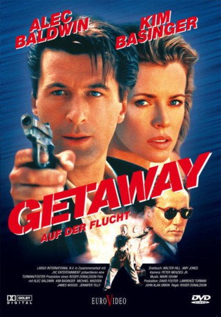
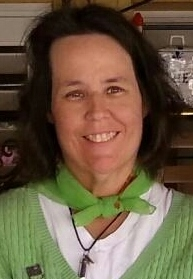

#8088 Getaway
Alternativ: The Getaway
 
 IMDB-Wertung: 5.7 / 10
IMDB-Wertung: 5.7 / 10  Metascore: 0
Metascore: 0 
Nachdem Einbrecher Doc McCoy bei einem Deal hereingelegt wurde, landete er im Knast, kann aber durch die Hilfe seiner Frau und des einflussreichen Jack Benyon wieder freikommen. Dieser handelt jedoch nicht uneingennützig. Er zwingt McCoys Frau Carol zum Sex und den Ex Knackie zu einem neuen Überfall. Als dieser schief geht und ein Wachmann zu Tode kommt, flüchtet das Gaunerpärchen mit dem erbeuteten Geld Richtung Mexiko verfolgt von Polizei und den ehemaligen Komplizen. In einer Grenzstadt kommt es zum Showdown...
Jahr: 1994
Dauer: 115 Minuten
FSK: 16
Land: USA Studio: Universal PicturesTonspuren: DTS - ,
Untertitel: Deutsch,
Auflösung: 1080p (1918x816) Größe: 8519 MB
Genre: Action, Thriller, Drama, Abenteuer, Krimi, Liebe
Regisseur: Roger Donaldson
Drehbuch: Jim Thompson
Soundtrack: Mark Isham
Darsteller:
 Alec Baldwin als Carter 'Doc' McCoy
Alec Baldwin als Carter 'Doc' McCoy Kim Basinger als Carol McCoy
Kim Basinger als Carol McCoy Michael Madsen als Rudy Travis
Michael Madsen als Rudy Travis James Woods als Jack Benyon
James Woods als Jack Benyon David Morse als Jim Deer Jackson
David Morse als Jim Deer Jackson Jennifer Tilly als Fran Carvey
Jennifer Tilly als Fran Carvey- James Stephens als Harold Carvey, DVM
 Richard Farnsworth als Slim
Richard Farnsworth als Slim Philip Seymour Hoffman als Frank Hansen
Philip Seymour Hoffman als Frank Hansen Royce D. Applegate als Gun Shop Salesman
Royce D. Applegate als Gun Shop Salesman- Daniel Villarreal als Luis Mendoza
- Elske McCain als Driver (uncredited)
- Richard Meek als Reporter (uncredited)
- Ella Arlienne Scofield als Train Station Ticket Clerk (uncredited)
- Robert Sucato als Bar Patron (uncredited)
 Burton Gilliam als Gollie
Burton Gilliam als Gollie- Scott McKenna als Red Shirt
- Alex Colon als Ramon
- Justin Williams als Soldier
- Peppi Sanders als Bookkeeper
- Jo Ann Soto als Woman on Train
- Louis Martinez als Train Station Cop
- Boots Southerland als Cab Driver
- Maurice Orozco als Jose, Customs Official
- George Dobbs als City Jail Guard
- Kenny Endoso als Sheriff's Van Driver
- Don Pulford als Guard in Counting Room
- Rick Taylor als Ralph E. Hall
- Phil Allen als Newscaster #1
- Bill Mosley als Newscaster #2
- Debbie Dedo als Newscaster #3
- Gary Kirk als Policeman
- J.W. 'Corkey' Fornof als Pilot
- Peter Donaldson als Boy in Cafe
- Michele Hawk als Waitress
- Sammy Hernandez als Bartender
- William Bolander als Racetrack Patron (uncredited)
- Bill Cook als Police Officer (uncredited)
-  Kacee DeMasi als Horse Trainer (uncredited)
- Lee Hollingsworth als Police Officer (uncredited)
- Bob Huff als Racetrack Patron (uncredited)
- Elaine Huff als Racetrack Patron (uncredited)
- April Manchester-Miller als Bar Patron (uncredited)
- Brian Patterson als Train Passenger (uncredited)
- Tracy Sucato als Racetrack Patron (uncredited)
- Rodd Wolff als Criminal (uncredited)
Datei: X:\1994\Getaway (1994, FSK16, 1918x816).mkv seit 24.01.2018
Festplatte: HD 1992-1995
 Es gibt insgesamt 67 Filme in der Gruppe '1994'
Es gibt insgesamt 67 Filme in der Gruppe '1994'